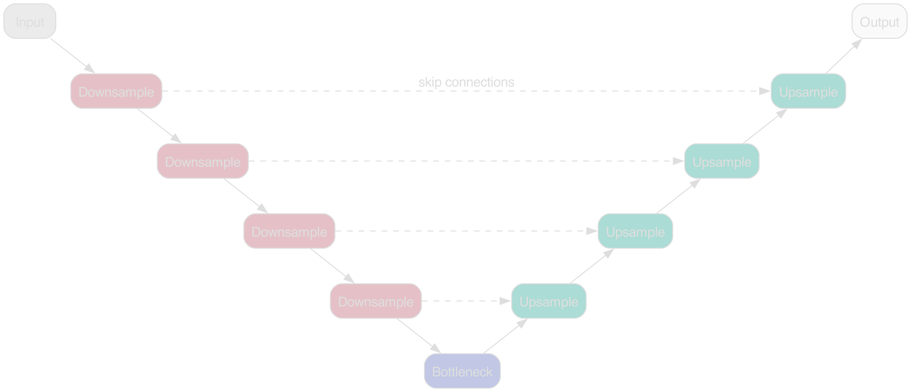
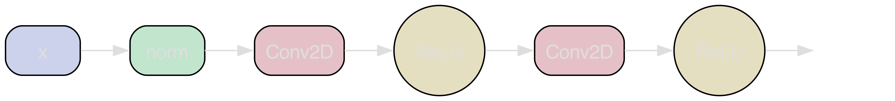
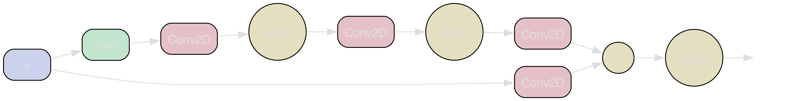
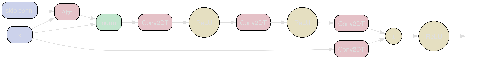
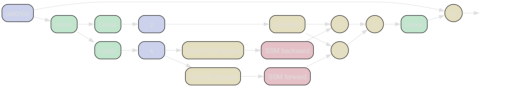

SKACH weekly meeting
GenAI architecturesSKA research at
Zurich University of Applied Sciences (ZHAW)
Centre for Artificial Intelligence (CAI)
Institute for Business Information Technology (IWI)
July 11, 2024
 Philipp Denzel, Frank-Peter Schilling, Elena Gavagnin
Philipp Denzel, Frank-Peter Schilling, Elena Gavagnin
GenAI architecturesSKA research at
Zurich University of Applied Sciences (ZHAW)
Centre for Artificial Intelligence (CAI)
Institute for Business Information Technology (IWI)
Zurich University of Applied Sciences (ZHAW)
Institute for Business Information Technology (IWI)
July 11, 2024
Philipp Denzel, Frank-Peter Schilling, Elena Gavagnin
Recap:
Generative models
for map-to-map translation
Dataset from IllustrisTNG
- projected IllustrisTNG galaxies
- 6 domains:
- dark-matter, stars, gas,
HI, temperature, magnetic field
- dark-matter, stars, gas,
- ∼ 2'000 galaxies, (across 6 snapshots)
- ∼ 360'000 images
- each galaxy \(\ge\) 10'000 particles
- augmented: up to 5x randomly rotated
- scale: 2 dark-matter half-mass radii

Dataset from IllustrisTNG
- projected IllustrisTNG galaxies
- 6 domains:
- dark-matter, stars, gas,
HI, temperature, magnetic field
- dark-matter, stars, gas,
- ∼ 2'000 galaxies, (across 6 snapshots)
- ∼ 360'000 images
- each galaxy \(\ge\) 10'000 particles
- augmented: up to 5x randomly rotated
- scale: 2 dark-matter half-mass radii

Generative model paradigms
Benchmark of generative models we're investigating and comparing:
- cGANs: see previous talks, e.g. spring meeting
- (Score-based) diffusion models: promising results, but really slow
- InDI models: more efficient at inference?
- Diffusion Mamba: the latest and greatest?
Adversarial training

Figure 1: pix2pix scheme following Isola et al. (2016)
Diffusion process

Figure 2: Diffusion scheme following Song et al. (2021)
Inversion by Direct Iteration (InDI)

Figure 3: InDI's iteration scheme following Delbracio & Milanfar (2023)
Main component: U-Net

Figure 4: U-Net following Ronneberger et al. (2015)
Encoder/Decoder blocks
- Normalize inputs (across channels, batches, or groups)
- if downsampling:
- decrease image width and height
- map to feature space
- if upsampling
- increase image width and height
- unpack features
- Activation
- i.e. non-linear mapping
Classical blocks
- Normalize input x (in groups across width, height, and depth)
- Convolutions extract spatial features
- if upsampling: transposed

Residual blocks
- Skip connections to lower/upper layers
- better information passing to lower levels

Attention blocks
- Attention for better feature selection
- Positional embeddings
- at every skip connection

Mamba Vision block
- Mamba: Selective State-space models (Gu & Dao et al. 2023)
Hardware optimized operators: Convolutions ⟶ Parallel associative scans (as in all-prefix-sums)- runs in O(n log n) time sequentially / in O(log n) time parallel
- image-patch tokenization: flatten & linear projection

Theoretical comparison
| per layer | RNN | SSMs | Conv | Attn | Mamba |
|---|---|---|---|---|---|
| computation | O(L) | O(L) | O(KL) | O(L2) | O(L) |
| memory | O(1) | O(1) | O(K(3/2)) | O(L2) | O(L) |
| performance | - | ~ | + | + + + | + + (+) |
where L is the number of pixels and K the convolutional kernel size.
- RNNs calculate recursively (slow)
- Convolutions often do the job…
- Transformers are fast due to parallelism
Preliminary U-Net training comparison
- averages from randomized sweeps of 16 runs:
- with batch size 12 (unless *extrapolated)
- with float32 precision
- training until convergence
| U-Net | Vanilla | Residual | Attn * | ViT * | Mamba * |
|---|---|---|---|---|---|
| parameters [M] | 31.7 ± 9.6 | 45.1 ± 11.4 | 53.2 ± 4.4 | 62.3 ± 19.5 | 43.6 ± 10.9 |
| memory (fwd) [GB] | 2.9 ± 0.9 | 4.4 ± 0.7 | 36.7 ± 16.1 | 48.9 ± 12.1 | 16.2 ± 6.4 |
| avg. training [h] | 16.3 ± 4.7 | 28.6 ± 2.3 | ~124 | ~163 | ~68 |
Does it make a difference in price?
- using typical pricing for private use
- adjusting batch size to hardware VRAM
- prices for a single model:
| Compute [CHF] | Vanilla | Residual | Attn * | ViT * | Mamba * |
|---|---|---|---|---|---|
| H100 (80GB) | 55.42 | 97.24 | 421.6 | 554.2 | 244.8 |
| A100 (40GB) | 33.09 | 58.06 | 251.72 | 330.89 | 146.16 |
| V100 (16GB) | 19.56 | 34.32 | - | - | 81.6 |
*extrapolated
References
- Song et al. (2021): Diffusion models
- Delbracio & Milanfar (2023): InDI: Inversion by Direct Iteration
- Mamba: Selective state-space models
- MoE-Mamba: Mixture-of-Experts-Mamba
- MambaByte: Raw byte sequencing
- ViM: Vision Mamba
- DiM: Diffusion Mamba
- GPU Gems 3: cf. parallel prefix-sums
- mamba-tiny: cf. basic scan implementation
Contact
Email: philipp.denzel@zhaw.ch